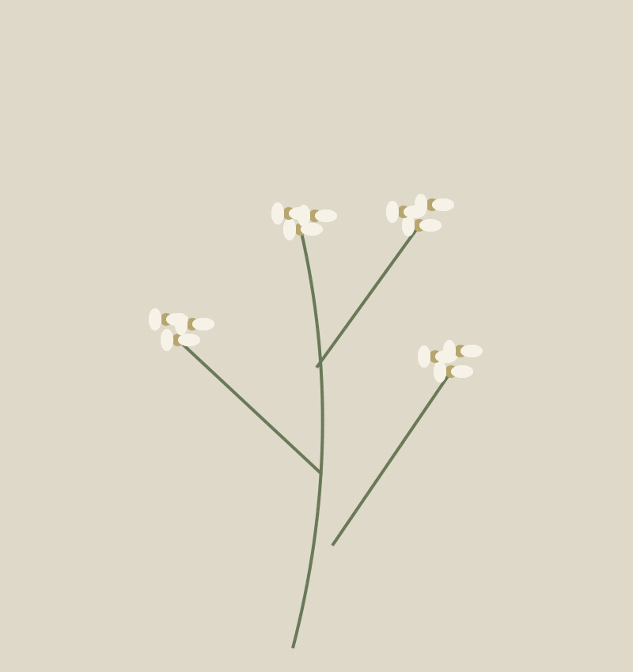
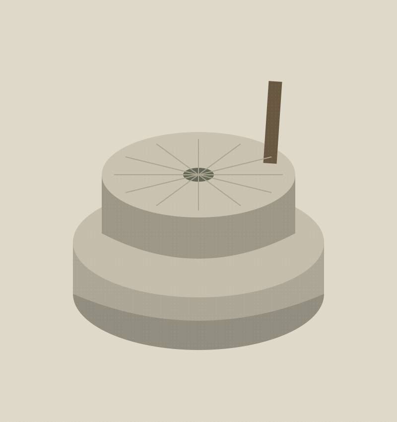

まずは、届いた一口を。
細打ちの蕎麦は、時間とともに表情が変わります。お出ししたら、ぜひ早めに一口目を。締めたての食感を味わってください。
一枚の蕎麦に、日々の仕事を。
「久呂無木」は、「くろむぎ」と読みます。
『和名類聚抄』に、現在の蕎麦を表す言葉として記されている「久呂無木」。その名を店名にいただきました。
蕎麦という日本の食文化に向き合い、自分の手で一枚を打つ。西所沢で、その仕事を重ねています。


蕎麦の実を石臼で挽いて製粉し、水を回し、練り、のし、切る。久呂無木の蕎麦は、手仕事から生まれます。
粉と水というシンプルな材料で、店の個性を表す。店主がブログで伝えてきた、手打ちへの想いです。
食感、甘み、香り。一口ごとに移ろう蕎麦の表情まで、お楽しみください。
蕎麦の手仕事について読む（別タブで開きます）細打ちの蕎麦は、時間とともに表情が変わります。お出ししたら、ぜひ早めに一口目を。締めたての食感を味わってください。
蕎麦の3分の1から半分ほどをつゆにつけて。蕎麦の風味の後に、つゆの味わいが追いかける食べ方をおすすめしています。
蕎麦を食べ終えたら、残ったつゆに蕎麦湯を注いで。濃厚な蕎麦湯とともに、出汁の香りまでお楽しみください。
店主がブログで紹介する「久呂無木流」の楽しみ方です。
夜のご予約・お問い合わせは、お電話で。